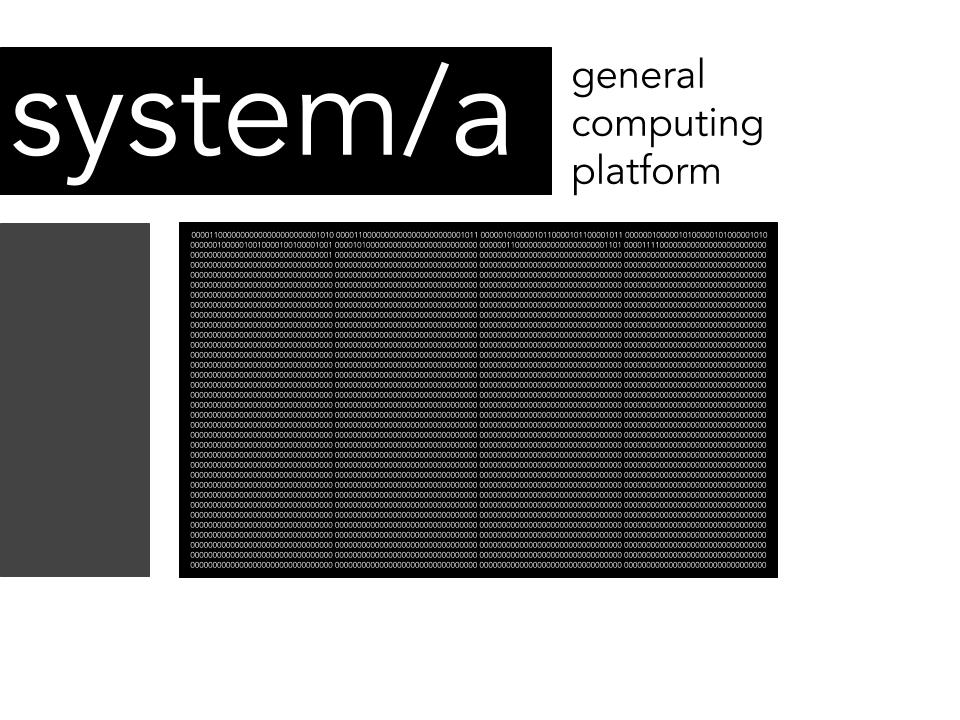

system/a
A slightly-less modern computing system.
Table of Contents

Introduction
This was, in essence, the thing that made me realize the beauty of computer science. Yes, it looks incredibly ugly and doesn't work right now, but when it did work it was beyond beautiful. Why? Because in learning how a basic memory-to-memory virtual machine was implemented I realized how elegant and simple computer science is.
Yes, there are instruction pipelines, yes, there are other complex things going on, but even with the added complexity the simplicity and beauty of the interfaces stood out. With a continuous block of memory and simple rules you could simulate anything and it was interesting to experience and discover how programming languages worked as well.
You can see the fancy manual I made for it here.
Please note that all of this code is terrible and possibly non-functional. I have it here simply because I have fond memories about it.
Source Code
main.cpp
#include <iostream> #include <string> #include "assembler.h" #include "systema.h" #include "instructions.h" /* system/a this is the program that contains the code for simulating a system/a computer and includes a translator for output, a complete system/a instruction set and a full assembler for converting ASM to machine code. */ int main() { assembleFile("test.saa", "test.sam"); runSystemAProgram("test.sam"); std::cin.get(); return 0; }
systema.h
#pragma once #include <string> #include <iostream> #include <fstream> #include <sstream> #include <cmath> #include "instructions.h" void readFileIntoMemory(const std::string inputFile, bool(&memory)[256][32]); void coreDumpToConsole(bool memory[256][32], int programCounter); void processCycle(int &programCounter, bool(inputBuffer)[32], bool(&outputBuffer)[32], bool(&memory)[256][32]); int toAddr(const int addrPos, const int programCounter, bool memory[256][32]); int addrToDec(const int addr, bool memory[256][32]); void readFileIntoMemory(const std::string inputFile, bool(&memory)[256][32]) { const int ASCIIOffset = 48; int lineNum = 0; std::ifstream machineCode(inputFile); std::string line; for (int lineNum= 0; lineNum < 256; lineNum++) { std::getline(machineCode, line); for (int CharcterNum = 0; CharcterNum < line.length(); CharcterNum++) { int numChar = line[CharcterNum]; numChar = numChar - ASCIIOffset; bool slot = numChar; memory [lineNum][CharcterNum] = slot; } } } //this prints the state of the machine to the console void coreDumpToConsole(bool memory[256][32], int programCounter) { std::cout << "CURRENT INSTRUCTION ADDR :" << programCounter << std::endl; std::cout << "CORE DUMP OUTPUT : " << std::endl; for (int rowNum = 0; rowNum < 16; rowNum++) { for (int columnNum = 0; columnNum < 32; columnNum++) { int slot = memory[rowNum][columnNum]; std::cout << slot; } std::cout << std::endl; } } void printOutBuf(bool outputBuffer[32]) { long long value = 0; long long positionVal = 0; for (int bit = 31; bit > 0; bit--) { value += outputBuffer[bit] ? pow(2, positionVal) : 0; positionVal++; } std::cout << value; } void runSystemAProgram(const std::string inputFile) { bool inputBuffer [32]; bool outputBuffer [32]; bool memory [256][32]; bool STP = false; int programCounter = 0; readFileIntoMemory(inputFile, memory); while (STP == false) { processCycle(programCounter, inputBuffer, outputBuffer, memory); if (programCounter < 0) STP = true; coreDumpToConsole(memory, programCounter); std::cin.get(); } printOutBuf(outputBuffer); } // this simulates a operating cycle of system/a void processCycle(int &programCounter, bool (inputBuffer)[32], bool (&outputBuffer)[32], bool (&memory)[256][32]) { const bool iP0 = memory[programCounter][4]; const bool iP1 = memory[programCounter][5]; const bool iP2 = memory[programCounter][6]; const bool iP3 = memory[programCounter][7]; const int argAddr1 = toAddr(0, programCounter, memory); const int argAddr2 = toAddr(1, programCounter, memory); const int tgtAddr = toAddr(2, programCounter, memory); std::cout << "ProgCount : " << programCounter << " AA1 : " << argAddr1 << " AA2 : " << argAddr2 << " TGA : " << tgtAddr << " iP0 : " << iP0 << " iP1 : " << iP1 << " iP2 : " << iP2 << " iP3 : " << iP3 << std::endl; // FLP 00001101 if (iP0 && iP1 && !iP2 && iP3) FLP(argAddr1, programCounter, memory); // ADD 00000010 else if (!iP0 && !iP1 && iP2 && !iP3) ADD(argAddr1, argAddr2, tgtAddr, programCounter, memory); // JMP 00001010 else if (iP0 && !iP1 && iP2 && !iP3) JMP(tgtAddr, programCounter, memory); // JIE 00000101 else if (!iP0 && iP1 && !iP2 && iP3) JIE(argAddr1, argAddr2, tgtAddr, programCounter, memory); // WRT 00000011 else if (!iP0 && !iP1 && iP2 && iP3) WRT(tgtAddr, outputBuffer, programCounter, memory); // RED 00001100 else if (iP0 && iP1 && !iP2 && !iP3) RED(tgtAddr, inputBuffer, programCounter, memory); // MOV 00000100 -> this moves the else if (!iP0 && iP1 && !iP2 && !iP3) MOV(argAddr1, tgtAddr, programCounter, memory); // STP 00001111 -> this stops the machine else if (iP0 && iP1 && iP2 && iP3) { STP(programCounter); } // if given illegal opcode the system ignores it and increments the program counter else { programCounter++; } } int toAddr(const int addrPos, const int programCounter, bool memory[256][32]) { const int addrPosF = (addrPos * 8) + 8; const int p0 = (memory[programCounter][addrPosF + 0]) ? 128 : 0; const int p1 = (memory[programCounter][addrPosF + 1]) ? 64 : 0; const int p2 = (memory[programCounter][addrPosF + 2]) ? 32 : 0; const int p3 = (memory[programCounter][addrPosF + 3]) ? 16 : 0; const int p4 = (memory[programCounter][addrPosF + 4]) ? 8 : 0; const int p5 = (memory[programCounter][addrPosF + 5]) ? 4 : 0; const int p6 = (memory[programCounter][addrPosF + 6]) ? 2 : 0; const int p7 = (memory[programCounter][addrPosF + 7]) ? 1 : 0; return p0 + p1 + p2 + p3 + p4 + p5 + p6 + p7; } int addrToDec(const int addr, bool memory[256][32]) { long long value = 0; for (int bit = 31; bit > 0; bit--) { value += memory[addr][bit] ? pow(2, bit) : 0; } return value; }
assembler.h
#pragma once #include <string> #include <fstream> #include <sstream> #include <bitset> #include <map> int assembleFile(const std::string inputFile, const std::string outputFile); std::string assembleLine(std::string asmLine); int hexToDec(const std::string hexNum); // this assembles a system/a assembly file and converts it into a system/a machine code file int assembleFile(const std::string inputFile, const std::string outputFile) { std::string machineLine, machineCode; std::ifstream assembly(inputFile); for (std::string line; std::getline(assembly, line);) { machineLine = assembleLine(line); machineCode += (machineLine + "\n"); } std::ofstream machineCodeFile; machineCodeFile.open(outputFile); machineCodeFile << machineCode; machineCodeFile.close(); return 0; } // this reads lines of fixed-width assembly and converts them into binary machine code std::string assembleLine(std::string asmLine) { int position = 0; std::stringstream asmStream(asmLine); std::string token; std::string machineLine; bool NUMMarker = false; std::map<const std::string, const std::string> instructions = { { "FLP", "00001101" },{ "ADD", "00000010" },{ "JMP", "000010100000000000000000" },{ "JIE" , "00000101" }, { "WRT" , "000000110000000000000000" },{ "RED" , "000011000000000000000000" }, { "MOV", "00000100" },{ "STP", "00001111000000000000000000000000" } }; while (getline(asmStream, token, ' ') && (machineLine.length() < 32) && (token != ";")) { if (NUMMarker == true) { std::bitset<32> Binary(hexToDec(token)); machineLine += Binary.to_string(); } else if (instructions.find(token) != instructions.end()) machineLine += instructions.find(token)->second; else if (token == "NUM") NUMMarker = true; else if (token != "") { std::bitset<8> Binary(hexToDec(token)); machineLine += Binary.to_string(); } } while (machineLine.length() < 32) { machineLine += "00000000"; } return machineLine; } // this converts intigers to decimal values int hexToDec(const std::string hexNum) { std::stringstream numStream; numStream << std::hex << hexNum; int decimalNum; numStream >> decimalNum; return decimalNum; }
instructions.h
once // this flips the bits of a memory address void FLP(int argAddr1, int &programCounter, bool (&memory)[256][32]) { for (int bit = 0; bit < 32; bit++) { memory[argAddr1][bit] = !memory[argAddr1][bit]; } programCounter++; } // this adds the number in argAddr1 to argAddr2 and places it in the tgtAddr void ADD(int argAddr1, int argAddr2, int tgtAddr, int &programCounter, bool(&memory)[256][32]) { bool carry = false; bool contArgAddr1; bool contArgAddr2; for (int bit = 31; bit > 0; bit--) { contArgAddr1 = memory[argAddr1][bit]; contArgAddr2 = memory[argAddr2][bit]; if (contArgAddr1 && contArgAddr2 && carry) { memory[tgtAddr][bit] = 1; carry = 1; } else if (((contArgAddr1 && contArgAddr2) && !carry) || ((contArgAddr1 && carry) && !contArgAddr2) || ((contArgAddr2 && carry) && !contArgAddr1)) { memory[tgtAddr][bit] = 0; carry = 1; } else if ((contArgAddr1 && !contArgAddr2 && !carry) || (!contArgAddr1 && contArgAddr2 && !carry) || (!contArgAddr1 && !contArgAddr2 && carry)) { memory[tgtAddr][bit] = 1; carry = 0; } else { memory[tgtAddr][bit] = 0; carry = 0; } } programCounter++; } // this unconditionally sets the program counter to the target address void JMP(int tgtAddr, int &programCounter, bool(&memory)[256][32]) { programCounter = tgtAddr; } // this sets the program counter to the target address if argAddr1 and argAddr2 is equal void JIE(int argAddr1, int argAddr2, int tgtAddr, int &programCounter, bool(&memory)[256][32]) { bool equal = true; int bit = 0; while ((bit < 32) && equal) { if (memory[argAddr1][bit] != memory[argAddr2][bit]) equal = false; bit++; } if (equal) programCounter = tgtAddr; else programCounter++; } // this writes the contents of tgtAddr to the output buffer void WRT(int tgtAddr, bool (&outputBuffer)[32], int &programCounter, bool(&memory)[256][32]) { for (int bit = 0; bit < 32; bit++) { outputBuffer[bit] = memory[tgtAddr] [bit]; } programCounter++; } // this writes the contents of the input buffer to tgtAddr void RED(int tgtAddr, bool (inputBuffer)[32], int &programCounter, bool(&memory)[256][32]) { for (int bit = 0; bit < 32; bit++) { memory[tgtAddr][bit] = inputBuffer[bit]; int bitVal = memory[tgtAddr][bit]; memory[tgtAddr][bit] = 0; } programCounter++; } // this copies the value contained in argAddr1 to tgtAddr void MOV(int argAddr1, int tgtAddr, int &programCounter, bool(&memory)[256][32]) { for (int bit = 0; bit < 32; bit++) { memory[tgtAddr][bit] = memory[argAddr1][bit]; } programCounter++; } // this sets the program counter to an illegal value, causing the computer to stop and return the STP code void STP(int &programCounter) { programCounter = -1; }